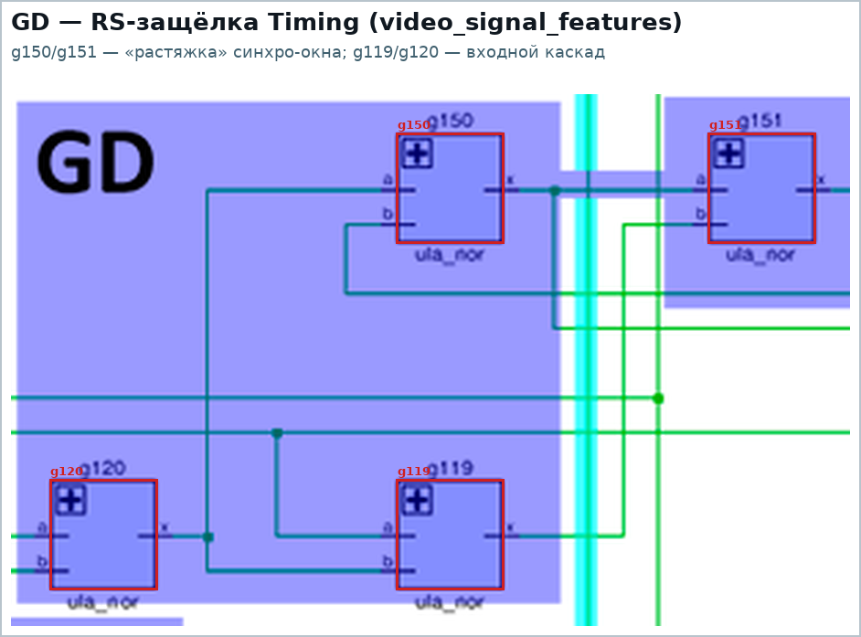

Последовательностные элементы (issue #7)
Содержание
- 1. Как в ULA устроен триггер
- 2. Обозначения на аннотированном нетлисте
- 3. GD — защёлка (39 кластеров)
- 4. FD — счётный D-триггер (12 кластеров)
- 5. TCE — счётная ячейка V-счётчика (3 кластера)
- 6. TRCE — биты 3..8 V-счётчика (1 кластер, 59 вентилей)
- 7. TRC? — биты 6..8 H-счётчика (1 кластер, 25 вентилей)
- 8. SR — сдвиговый регистр пикселей (8 кластеров)
- 9. Арбитр contention
- 10. Полный список кластеров
- 11. VCounter: что подтвердилось, а что нет
- 12. Что осталось сделать по issue #7
- 13. Как пересобрать картинки
Задача issue #7: найти в модульном HDL все триггеры и оформить их отдельными
модулями. Сейчас модульный HDL «валится на иксах» именно потому, что в примитивы
свёрнуты только защёлки GD, а счётчики, сдвиговый регистр, делитель FLASH и
разные спорадические RS-защёлки остались закольцованными NOR прямо в тексте
модулей (см. specs/hdl-vs-netlist-verification.md, раздел 4.2).
Этот раздел — инвентаризация: что именно в нетлисте является
последовательностной логикой, как оно устроено на вентилях и как помечено на
аннотированном нетлисте. Картинки вырезаны из
imgstore/ula6c001_annotated.png скриптом
tools/gen_seq_crops.py (геометрия вентилей берётся из
векторного design/ula6c001.pdf, кластеры считаются по нетлисту — см. раздел 13).
1. Как в ULA устроен триггер
Базовый кирпич — RS-защёлка из двух закольцованных NOR (единственный вид памяти в этом чипе; D-триггеры и счётные ячейки собраны из таких защёлок и обвязки). Формально это сильно связная компонента графа вентилей размером 2: выход каждой NOR заведён на вход другой.

Выше — самая «голая» RS-защёлка чипа: g150/g151 (сигнал Timing в
video_signal_features, «растяжка» синхро-окна), g119/g120 — входной
каскад.
Всего в нетлисте 65 запоминающих кластеров (SCC размера > 1), из них 30
уже свёрнуты в примитив GD, а 35 (245 вентилей) — ещё рассыпуха:
| обозначение в аннотации | что это | кластеров | вентилей | модули |
|---|---|---|---|---|
GD |
защёлка: RS-ядро + управляющие NOR | 39 | 2 / 4 / 5 | data_latch, attr_latch, ao_latch, io, latch_control, pixel_shift_reg, video_signal_features |
FD |
счётный D-триггер (÷2) на 6×NOR | 12 | 6 | clkgen, flash_clock, hcounter (биты 0..5) |
TCE |
счётная ячейка V-счётчика на 8×NOR | 3 | 8 | vcounter (биты 0..2) |
TRCE |
ячейки битов 3..8 V-счётчика (общие вентили) | 1 | 59 | vcounter |
TRC? |
ячейки битов 6..8 H-счётчика (общие вентили) | 1 | 25 | hcounter |
SR |
ячейка сдвигового регистра (3×NOR + NOR3) | 8 | 4 | pixel_shift_reg |
GD |
защёлки арбитра + общая логика в одном SCC | 1 | 15 | contention |
Сводная карта — все 65 кластеров на аннотированном нетлисте (цвет = тип):

2. Обозначения на аннотированном нетлисте
Автор разметки подписал блоки прямо на картинке — этот раздел фиксирует прочитанные подписи, чтобы дальше использовать одну и ту же терминологию:
| подпись на картинке | где (модуль HDL) |
|---|---|
GD 0..7 |
DataLatch, Attribute Latch, Attribute Output Latch, Pixel Shift Register (плечи SR) |
GD 0..4 |
Border Color = регистр порта (io: B0_B, B1_R, B2_G, Tape, Speaker) |
GD |
Latch Control (VidEn), Contention Handler (/MREQ, /IOREQ), Timing |
FD |
ClkGen (÷2), Flash Clock (5 ячеек), HCounter биты 0..5 |
TCE 0..2 |
VCounter биты 0..2 |
TRCE 3..8 |
VCounter биты 3..8 |
TRC / TRC? / TRCE? |
HCounter биты 6..8 (помечено со знаком вопроса) |
SR 0..7 |
Pixel Shift Register биты 0..7 |
3. GD — защёлка (39 кластеров)
Классическая прозрачная защёлка: RS-ядро (g347/g348) плюс входной каскад,
который «открывает» ядро по разрешению nE. В HDL это уже примитив
GD (nE=0 → Q=D).

Ячейка занимает 4 вентиля (DataLatch[5] = g347, g348, g369, g370),
в attr_latch — 5 (AttrLatch[0] = g221, g222, g225, g245, g246).
Свёрнуто в примитив: 30 кластеров / 130 вентилей (8 data_latch, 8
attr_latch, 8 ao_latch, 5 io, 1 latch_control); ещё два GD-плеча
(/MREQ, /IOREQ) сидят внутри общего SCC арбитра contention.
Отдельно стоят 9 «голых» RS-защёлок, которые аннотация тоже помечает GD, но
которые в HDL всё ещё на вентилях: 8 плеч сдвигового регистра
(Pixel[0..7] = g483/g484, g463/g464, g457/g458, g440/g441,
g434/g435, g419/g420, g413/g414, g400/g401) и Timing
(g150/g151). Они и попадают в объём работ по issue #7.
4. FD — счётный D-триггер (12 кластеров)
Одна и та же схема на 6×NOR: две защёлки (master/slave) плюс обвязка, включённая
счётным кольцом (nQ → D). Работает как делитель на 2.

clkgen: g423..g425 (master) + g430..g432 (slave), делит OSC на 2 —
это и есть nCLK7, от которого тактируются H-счётчик, защёлки и сдвиговый
регистр (подробнее — specs/ula-modules.md, модуль 1).
Та же ячейка использована в делителе FLASH (5 штук, цепочкой):

и в H-счётчике — биты 0..5 (такт w337 = /nCLK7, выход nC[i]/C[i]):

Все 12 ячеек — рассыпуха: в HDL это отдельные ula_nor, а не модуль.
5. TCE — счётная ячейка V-счётчика (3 кластера)
Ячейка на 8×NOR (на две NOR больше, чем FD). Биты 0..2 имеют собственный SCC
каждый, все три тактируются CLKHC6:

Бит 0 дополнительно принимает HCrst (сброс/начало строки — он же carry in для
бита 0, см. vcounter.md), биты 1 и 2 получают перенос от
предыдущего бита (w88, w160).
6. TRCE — биты 3..8 V-счётчика (1 кластер, 59 вентилей)
Начиная с бита 3 V-счётчик перестаёт быть набором отдельных ячеек: все биты
3..8 — один SCC из 59 вентилей, они делят между собой такт vclk2, сброс
vrst и часть переносной логики. Именно это место vcounter.md называет
«распидорасенным».

Ключевые общие сигналы (проверено по нетлисту и HDL):
| сигнал | вентиль | формула | кто использует |
|---|---|---|---|
vclk2 (w193) |
g523 |
nor(nTCLKA, nC5) |
g550, g551 (бит 3), g543, g544 (4), g570, g571 (5), g602, g603 (6), g607, g608 (7), g577, g578 (8) |
vrst (w295) |
g567 |
nor4(nV[5], nV[4], nV[8], w278) |
g539 (3), g547 (4), g569 (5), g566 (8) |
перенос/w278 |
g89 |
not(w98), где w98 — выход бита 2 |
g538, g540 (бит 3) и g567 (формирование vrst) |
Последняя строка — тот самый пример экономии: инвертор g89 обслуживает и
перенос из бита 2 в бит 3, и дополнительный сброс vrst. В причёсанном HDL
g89 остаётся обычным ula_not (в исходнике он так и подписан), а TRCE
делается модулем без «лишнего» выхода.
7. TRC? — биты 6..8 H-счётчика (1 кластер, 25 вентилей)
Симметричное место у H-счётчика: биты 0..5 — отдельные FD-ячейки, а биты
6..8 — одно ядро из 25 вентилей с общим HCrst (g104 = nor(nC[8], nC[7])) и
тремя 4-входовыми NOR g100/g116/g127. В аннотации это помечено TRC /
TRC? — то есть автор разметки сам не был уверен в типе.

8. SR — сдвиговый регистр пикселей (8 кластеров)
Ячейка сдвигового регистра — 4 вентиля (g232, g233, g485, g486):
NOR3 с загрузкой (g232: nDL[0] + SLoad + плечо) и RS-пара. У каждого бита
есть ещё своё GD-плечо (в аннотации GD 0..7), поэтому на картинке обе части
показаны отдельными тайлами:

9. Арбитр contention
Защёлки /MREQ и /IOREQ (GD mreq_gd, GD ioreq_gd) уже вынесены в
примитив, но их SCC слит с комбинаторикой арбитра в один кластер из 15
вентилей, так что структурно это место остаётся особым:

10. Полный список кластеров
Сгенерировано tools/gen_seq_crops.py --table (вентили указаны по именам из
нетлиста gNNN).
Сводка по типам
| тип | кластеров | вентилей в кластере | где |
|---|---|---|---|
gd (GD) |
39 | 2 / 4 / 5 | data_latch, attr_latch, ao_latch, io, latch_control, pixel_shift_reg, video_signal_features |
fd (FD) |
12 | 6 | clkgen, flash_clock, hcounter |
tce (TCE) |
3 | 8 | vcounter |
trce (TRCE) |
1 | 59 | vcounter |
trc (TRC?) |
1 | 25 | hcounter |
sr (SR) |
8 | 4 | pixel_shift_reg |
arb (GD) |
1 | 15 | contention |
clkgen
- FD —
fd, 6 вент.:g423,g424,g425,g430,g431,g432(рассыпуха)
hcounter
- биты 6..8 —
trc, 25 вент.:g98,g99,g100,g101,g102,g103,g104,g108,g109,g110,g111,g112,g113,g114,g115,g116,g121,g122,g123,g124,g125,g126,g127,g128,g129(рассыпуха) - бит 0 —
fd, 6 вент.:g444,g445,g446,g453,g454,g455(рассыпуха) - бит 1 —
fd, 6 вент.:g452,g468,g469,g470,g471,g472(рассыпуха) - бит 2 —
fd, 6 вент.:g496,g497,g498,g499,g507,g524(рассыпуха) - бит 3 —
fd, 6 вент.:g492,g493,g494,g495,g508,g509(рассыпуха) - бит 4 —
fd, 6 вент.:g510,g511,g512,g513,g521,g522(рассыпуха) - бит 5 —
fd, 6 вент.:g489,g490,g514,g515,g519,g520(рассыпуха)
vcounter
- бит 0 —
tce, 8 вент.:g140,g141,g142,g143,g144,g145,g146,g148(рассыпуха) - бит 1 —
tce, 8 вент.:g149,g157,g158,g159,g160,g161,g162,g163(рассыпуха) - бит 2 —
tce, 8 вент.:g132,g134,g135,g136,g137,g138,g164,g165(рассыпуха) - биты 3..8 —
trce, 59 вент.:g88,g93,g94,g95,g97,g536…g553,g564…g581,g595…g612(рассыпуха)
data_latch, attr_latch, ao_latch
По 8 защёлок GD 0..7 (4–5 вентилей каждая) — уже свёрнуты в примитив GD;
полный список вентилей печатает tools/gen_seq_crops.py --table
(DataLatch[0] = g219, g220, g247, g248, …, AttrLatch[3] = g320,
g321, g343, g344, AOLatch[7] = g303, g304, g331, g332).
io
- B0_B —
g223,g224,g243,g244; B1_R —g255,g256,g278,g279; B2_G —g289,g290,g311,g312; Tape —g322,g323,g341,g342; Speaker —g371,g372,g381,g382— уже свёрнуты вGD.
latch_control
- nVidEn —
g32,g466,g467,g480,g481— уже свёрнуто вGD.
pixel_shift_reg
- 8 ячеек
SR(по 4 вентиля):g232,g233,g485,g486;g234,g235,g461,g462;g268,g269,g459,g460;g270,g271,g438,g439;g298,g299,g436,g437;g300,g301,g417,g418;g334,g335,g415,g416;g336,g337,g398,g399— рассыпуха. - 8 плеч
GD(по 2 вентиля):g483,g484;g463,g464;g457,g458;g440,g441;g434,g435;g419,g420;g413,g414;g400,g401— рассыпуха.
flash_clock
- 5 ячеек
FD(по 6 вентилей):g180,g181,g207,g208,g209,g210;g182,g183,g203,g204,g205,g206;g184,g185,g199,g200,g201,g202;g186,g187,g195,g196,g197,g198;g188,g189,g191,g192,g193,g194— рассыпуха.
video_signal_features
- Timing —
g150,g151(GD, RS-защёлка) — рассыпуха.
contention
- защёлки арбитра —
g42,g43,g48,g383,g384,g392,g393,g394,g395,g396,g397,g402,g403,g404,g405(дваGDвнутри + комбинаторика арбитра).
11. VCounter: что подтвердилось, а что нет
Проверка наработок vcounter.md по текущему нетлисту и HDL:
Сходится:
- «
HCrst— одновременно carry in для бита 0»:g9/g143заводятHCrstв бит 0 V-счётчика. - «биты 0..2 тактируются
CLKHC6»:g144/g145,g157/g158,g137/g138. - «биты 3..8 тактируются
vclk2, получаемым вg523из/TCLKAи/C5»:g523 = nor(nTCLKA, nC5) → w193, иw193действительно идёт в вентили битов 3..8. - «
vrstполучается вg567»:g567 = nor4(nV[5], nV[4], nV[8], w278) → w295. - «
g89из ячейки бита 3 переиспользуется дляvrst»:g89 = not(w98)(w98— выход бита 2) питает и перенос бита 3 (g538,g540), иg567. - «В причёсанном нетлисте будет просто дополнительный
not»: вhdl/ula6c001.vg89так и оставлен обычнымula_not, аg567собран наula_nor4— то есть отдельный модульTRCEс лишним выходом не нужен.
Требует уточнения:
vcounter.mdпишет «биты 3..5 —TRCE, биты 6..7 — сноваTCE, бит 8 —TRE», а аннотация на картинке помечаетTRCE 3..8. По вентилям:vrst(w295) приходит только в биты 3, 4, 5 и 8 (g539,g547,g569,g566), биты 6 и 7vrstне используют — то есть текстvcounter.mdструктурно точнее разметки, и подписьTRCEдля битов 6/7 стоит поправить.- Утверждение про «
TRE=TRCEбез carry out» для бита 8 прямо по вентилям не доказывается: бит 8 (g564..g566,g577..g581,g95) собран из тех же 8 NOR + инвертора, а его «переносная» тройкаg577/g578/g579замкнута сама на себя и наружу (на бит 9) ничего не отдаёт. Это косвенно подтверждает «лишний NOR выкинули», но точный вид ячейки бита 8 в HDL ещё надо зафиксировать (в исходнике он помечен// not sure). - В
hdl/ula6c001.vвесь блок битов 3..8 (// not sure) до сих пор не разбит на ячейки: модульvcounter— это 91 вентиль подряд с комментариями по битам. Это и есть основная работа по issue #7.
12. Что осталось сделать по issue #7
- Рассыпуха, которую нужно свёрнуть в модули (35 кластеров, 245 вентилей, из
них 237 ещё присутствуют в
hdl/): FD× 12 —clkgen,flash_clock(×5),hcounter(биты 0..5);TCE× 3 —vcounter(биты 0..2);TRCE—vcounter(биты 3..8, 59 вентилей) иTRC?—hcounter(биты 6..8, 25 вентилей);SR× 8 + плечиGD× 8 —pixel_shift_reg;GD— RS-защёлкаTiming(g150/g151);GD— два плеча в арбитреcontention(/MREQ,/IOREQ) в общем SCC.- Отдельно (из specs/hdl-vs-netlist-verification.md):
hdl/ulabase.vдолжен получить ту же X→0 семантикуula_nor, что иnetlist/ulabase.v, иначе HDL не выйдет из состоянияxдаже после выноса всех триггеров. - После выноса — повторная сверка HDL с нетлистом и снятие пометок
// not sureвvcounter.
13. Как пересобрать картинки
python3 tools/gen_seq_crops.py # imgstore/seq/*.png
python3 tools/gen_seq_crops.py --table # таблицы кластеров (раздел 10)
python3 tools/gen_seq_crops.py --check # сходимость геометрии вентилей
Скрипт считает кластеры по нетлисту (netlist/ula6c001.v), берёт названия
защёлок из icarus/run_ula.v, номера битов — из комментариев // N в HDL, а
координаты вентилей — из векторного design/ula6c001.pdf (та же схема, что
растеризована в design/ula6c001.png, а imgstore/ula6c001_annotated.png —
её аннотированная копия). Для «распидорасенных» ячеек (V-счётчик, H-счётчик
6..8) картинка автоматически собирается из тайлов по группам близких вентилей.